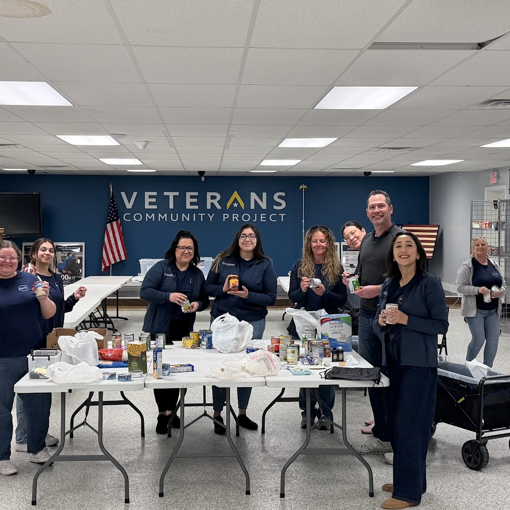

Whiplash Claims After Sudden Impact
Following a vehicle collision, some neck injuries are difficult to evaluate immediately because soreness and restricted movement may develop over the next several hours. A person should follow medical guidance, describe all symptoms accurately, and keep a personal account of how discomfort affects sleep, mobility, and ordinary responsibilities. Car Accident Lawyer in Kansas City may help explain how treatment history and functional limitations fit into a potential claim, while Car Accident Lawyer in Kansas City can offer practical direction about communicating with insurers without making premature statements.
The strength of a case may depend on more than a diagnosis. Photos of vehicle damage, repair estimates, employment schedules, and correspondence can help show the extent of disruption, while consistent treatment can address questions about duration and severity. Car Accident Lawyer in Kansas City may review how fault is assigned under applicable law, and Car Accident Lawyer in Kansas City can assess categories of relief such as medical expenses, lost income, and continuing care.
Before accepting an offer or signing a release, a claimant should consider whether the full course of recovery is known. Some conditions improve quickly, while others require therapy, modified duties, or additional evaluation, and a final agreement may limit later options. Car Accident Lawyer in Kansas City can help compare a proposed resolution with documented losses and explain the practical consequences of moving forward, allowing an informed decision based on the person's circumstances.

Brain Injury Lawsuits After Collisions
A legal claim involving cognitive or neurological impairment often turns on how clearly the available records connect the condition to the event and show its effect on daily functioning. Car Accident Lawyer in Kansas City may help organize information from treating providers, employers, and rehabilitation professionals so the record presents a consistent picture. Because concentration, memory, or decision making difficulties can make administrative tasks harder, Car Accident Lawyer in Kansas City can also help a client understand requests for information and make informed choices throughout the matter.
Responsibility and causation may be disputed even when the immediate circumstances seem clear. Analysis can draw on treatment chronology, diagnostic testing, work records, and expert interpretation, with each source evaluated for reliability and relevance. Car Accident Lawyer in Kansas City may investigate whether the available record supports liability and identify issues that require additional development. Car Accident Lawyer in Kansas City can explain how filing deadlines, procedural requirements, and comparative fault principles could affect the path of a claim.
The value of a legal recovery may depend on future needs as much as expenses already incurred. A careful assessment can consider reduced earning capacity, rehabilitation, adaptive services, changes in household roles, and the possibility that limitations will require continuing support. Before accepting a settlement, a person should understand the release language and whether the proposed amount addresses reasonably foreseeable consequences. Car Accident Lawyer in Kansas City may help evaluate those issues and pursue terms that reflect the documented impact.
Broken Bone Compensation After Crashes
When a traffic collision produces a fracture, expenses may continue after the initial emergency visit. Car Accident Lawyer in Kansas City can help organize imaging reports, surgical recommendations, pharmacy receipts, and therapy invoices into a coherent account of treatment. Prompt attention to orthopedic care can clarify the expected healing period and whether hardware, follow-up procedures, or extended therapy may be needed. Car Accident Lawyer in Kansas City may help distinguish amounts already paid from reasonably foreseeable medical costs when evaluating a potential claim.
Financial losses are not limited to medical charges. Car Accident Lawyer in Kansas City can assess pay stubs, leave records, travel costs, and equipment purchases to determine the injury's effect on finances. Car Accident Lawyer in Kansas City may help address pain, loss of use, and interruptions to planned activities without relying on speculation; the severity and duration of these effects should be supported by clinical opinions and documented treatment. If responsibility for the collision is contested, the available facts and applicable traffic rules may also influence the result.
Before accepting an offer or signing a release, a claimant should understand whether the proposed resolution accounts for future care, unpaid time away from work, and any lasting limitation. Car Accident Lawyer in Kansas City can help scrutinize settlement terms, identify missing categories of loss, and explain filing deadlines or other procedural requirements. Keeping bills, receipts, treatment plans, and written communications in one secure file may make later review more efficient, but legal decisions should be based on applicable state rules and the individual's medical outlook.
Kevin McManus Law Injury & Disability Attorneys
Kevin McManus Law Injury & Disability Attorneys
1100 Main Street, Suite 2300, Kansas City, MO 64105
(816) 680-4834